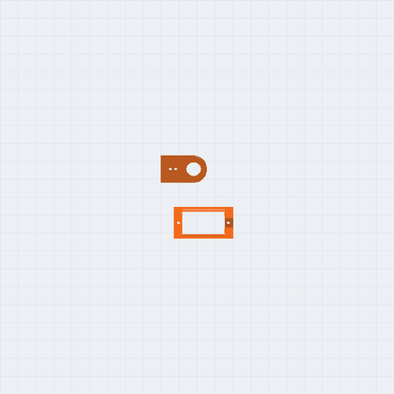
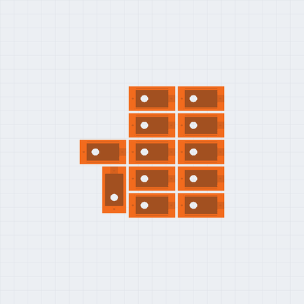
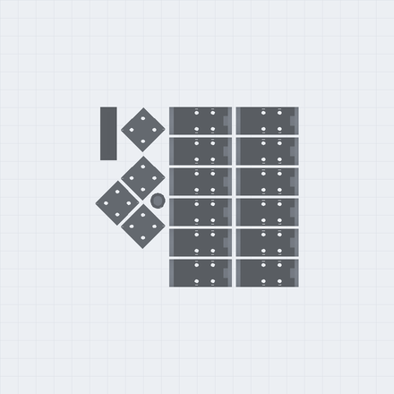
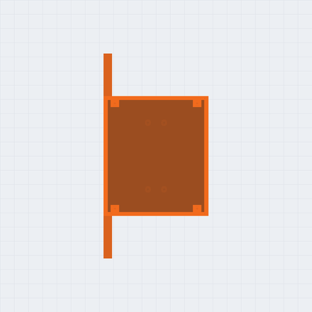
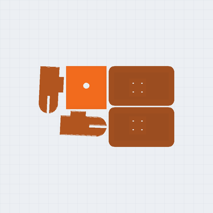
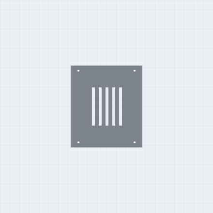
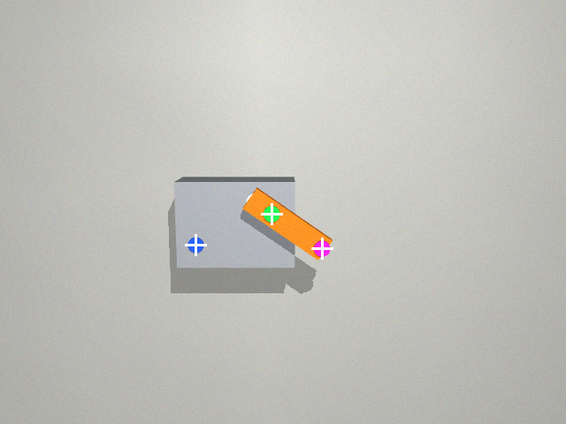

Navitek · N0 · version 0 · 8 novembre 2026
Un robot humanoïde de 33,1 cm, à imprimer chez vous.
13 servos de modélisme, une carte Raspberry Pi Pico 2 W et 38 pièces en PLA, imprimées sans support sur six plateaux. Tout est ici : l'assemblage en 3D, les fichiers à imprimer, la liste d'achats, le montage et le programme.
Version 0 : dessinée, vérifiée et tranchée. Pas encore imprimée.
Vérifié le 8 novembre : aucune collision entre les 63 pièces de l'assemblage · aucun porte-à-faux hors des ponts courts · chaque plateau tranché dans OrcaSlicer pour une Ender-3 V3 SE. Les temps et les grammes viennent du tranchage, pas d'une estimation.
Une seule articulation, répétée douze fois
Le boîtier, l'étrier et quatre vis M2
Chaque articulation est le même module : un boîtier qui tient le servo, et un étrier en U qui tourne avec lui. Un bras de l'étrier reçoit le palonnier du servo ; l'autre tourne sur un pivot imprimé, de l'autre côté du boîtier. La base de l'étrier se visse sur le dos du boîtier suivant, par quatre vis M2 sur un carré de 9 mm. Hanche, genou, cheville, épaule, coude : toujours la même paire de pièces.
C'est ce qui rend le robot réparable et modifiable. Une pièce cassée se réimprime en 24 min. Une jambe plus longue, c'est une rallonge de plus. Une articulation nouvelle se branche sur le même carré de vis.
Le gabarit d'abord. Les servos SG90 n'ont pas tous exactement la même taille d'une marque à
l'autre. Le plateau P0 imprime en 14 min une tranche du boîtier et un bout d'étrier : on y essaie un vrai
servo et son palonnier avant de lancer le reste. Si ça accroche, les cotes se corrigent en tête du fichier de
CAO (n0.py, FreeCAD) et toutes les pièces suivent.
Six plateaux, deux couleurs
PLA · couche 0,2 mm · 3 parois · 25 % gyroïde · sans support
Les pièces sont groupées par couleur : orange pour le corps, gris pour les étriers et le dos. Chaque plateau est un fichier 3MF prêt à ouvrir.






Les 3MF ont été tranchés pour une Creality Ender-3 V3 SE, buse 0,4. Ils s'ouvrent dans OrcaSlicer ou Bambu Studio et se retranchent pour n'importe quelle imprimante de 220 mm et plus : les orientations sont déjà faites.
Les pièces
Taille dans le sens de l'impression · temps et PLA pour une pièce
| Pièce | Qté | Taille (mm) | Temps | PLA | Plateau | Fichier |
|---|---|---|---|---|---|---|
| Gabarit d'essaià imprimer en premier, pour essayer un vrai servo | 1 | 40,8 × 46,2 × 7,2 | 14 min | 3 g | P0 | STL |
| Boîtier de servotient un servo ; son dos porte le carré de 4 vis de l'articulation suivante | 12 | 33,5 × 17,3 × 18,7 | 24 min | 5,9 g | P1 | STL |
| Étriertourne avec le servo : un bras sur le palonnier, l'autre sur le pivot imprimé | 12 | 35,3 × 15 × 26 | 23 min | 3,2 g | P2 | STL |
| Rallongeallonge la cuisse et le tibia | 4 | 18 × 17,3 × 10 | 11 min | 2,6 g | P2 | STL |
| Visièreentre dans sa fente, sur le devant de la tête | 1 | 9,4 × 29,4 × 3,2 | 3 min | 0,9 g | P2 | STL |
| Antenneferme le trou du tournevis, sur le dessus de la tête | 1 | 8,4 × 8,4 × 21,1 | 4 min | 0,4 g | P2 | STL |
| Torseporte les hanches, les épaules, le cou, le Pico et les piles | 1 | 74 × 144 × 46 | 3 h 02 | 62,8 g | P3 | STL |
| Têtese visse sur le palonnier du servo du cou | 1 | 44 × 42 × 40 | 1 h 24 | 27,1 g | P4 | STL |
| Mainse visse sur l'étrier du coude | 2 | 47,9 × 25 × 12 | 22 min | 7,2 g | P4 | STL |
| Pied gauchese visse sous l'étrier de la cheville | 1 | 68 × 40,5 × 4,5 | 24 min | 8,6 g | P4 | STL |
| Pied droitse visse sous l'étrier de la cheville | 1 | 68 × 40,5 × 4,5 | 23 min | 8,5 g | P4 | STL |
| Dosferme le torse par 4 vis | 1 | 74 × 84 × 2,4 | 35 min | 13,6 g | P5 | STL |
| Total, par plateaux | 38 | 15 h 21 | 256 g |
À acheter
Ce qui ne s'imprime pas
- 8 servos MG90SEngrenages en métal, pour les hanches, les genoux et les chevilles : ce sont eux qui portent le poids. Pourquoi ces servos, et pas de plus gros
- 5 servos SG90Pour les épaules, les coudes et le cou. Un MG90S convient partout aussi : même taille.
- 1 Raspberry Pi Pico 2 WOu un Pico 2 WH, dont les pattes sont déjà soudées. Il pilote les 13 servos directement, une broche chacun. Le Wi-Fi servira à le commander du téléphone.
- 4 piles AA NiMH et un boîtier 2 × 2 avec interrupteur4,8 V, la tension des servos, sans régulateur. Le boîtier est prévu dans le bas du torse : il y entre en volume, mais il n'est pas encore dessiné, et posé à plat il couvrirait la moitié des fentes des câbles des jambes (à vérifier au montage). Des NiMH rechargeables seulement, jamais des alcalines (pourquoi).
- 1 diode Schottky, 1 condensateur, 1 bornier, du filUne 1N5817 ou semblable, pour alimenter le Pico par sa broche VSYS. Un condensateur de 1000 µF (16 V : un choix, plus de deux fois la tension des piles) sur l'alimentation des servos. Une petite plaque à trous avec 13 rangées de 3 broches mâles, où se branchent les servos. Six rallonges de servo de 15 cm pour les genoux et les chevilles (une longueur estimée, pas mesurée sur la CAO : à vérifier au montage). Le schéma
- 72 vis M2 autotaraudeuses40 de 6 mm (les articulations, les hanches, les pieds, les mains), 16 de 16 mm (à travers les rallonges), 8 de 10 mm (les épaules, à travers le rebord), 4 de 8 mm (le dos), 4 de 5 mm (le Pico). Les vis des servos et des palonniers sont dans le sac des servos.
Le montage
Du pied vers la hanche, de la main vers l'épaule
- Imprimer le gabarit et y essayer un servo.Le servo entre dans la poche sans forcer, ses deux vis
d'oreilles mordent, le palonnier entre dans la poche du bras de l'étrier. Sinon, corriger le jeu (
JEU) ou les cotes du servo en tête den0.py, relancer FreeCAD et réimprimer le gabarit. - Imprimer les plateaux P1 à P5.15 h 07 en tout, en cinq fois. Orange pour P1, P3 et P4 ; gris pour P2 et P5.
- Centrer les 13 servos avant de poser un seul palonnier.Copier
main.pysur le Pico (il démarre enMODE = "centrer") et brancher les servos : chacun va à 90° et y reste. C'est la position droite de chaque articulation ; un palonnier posé ailleurs donne un robot tordu. - Chaque articulation : l'étrier d'abord, le servo ensuite.Mettre le servo dans son boîtier, avec ses deux vis d'oreilles. Visser la base de l'étrier sur le dos du boîtier suivant pendant que l'intérieur du U est encore libre (4 vis de 6 mm, ou de 16 mm à travers une rallonge). Ensuite seulement, glisser le boîtier et son servo dans le U : le pivot dans la douille, le palonnier dans sa poche, la vis du centre et les deux petites vis du palonnier.
- Les jambes, du pied vers la hanche.Le pied, l'étrier de la cheville (côté), son boîtier, l'étrier de la cheville (avant-arrière), son boîtier, l'étrier du genou avec la rallonge du tibia, le boîtier du genou, l'étrier de la hanche avec la rallonge de la cuisse, le boîtier de la hanche. Celui-ci se visse sous le torse, par l'intérieur.
- Les bras, de la main vers l'épaule.La main, l'étrier du coude, son boîtier, l'étrier de l'épaule, le boîtier de l'épaule : il se visse sous le rebord du torse, par le dessus (4 vis de 10 mm).
- Le cou et la tête.Le servo du cou entre par le toit du torse, ses vis d'oreilles dans le toit. La tête se pose sur son palonnier (deux petites vis) ; la vis du centre passe par le trou du dessus, puis l'antenne ferme le trou. La visière entre dans sa fente, avec une goutte de colle.
- Le Pico, les piles, les fils.Le Pico sur ses quatre entretoises, contre la poitrine. Les piles dans le bas du torse. Les fils des jambes passent par les deux fentes du fond, ceux des bras par les fentes des côtés. Le + des servos va directement aux piles, jamais par le Pico ; toutes les masses ensemble (le schéma).
- Fermer le dos et lancer la démonstration.Quatre vis de 8 mm. Dans
main.py, passer àMODE = "demo": le robot dit non de la tête, salue et s'accroupit deux fois. Si un geste part à l'envers, changer le sens de ce servo (SENS) ; s'il reste de travers, son réglage fin (TRIM).
Le câblage
Les piles, la diode, deux rails, les 13 servos
Chaque servo a trois fils : brun pour la masse, rouge pour le +, orange pour le signal. Les fils rouges et bruns vont aux deux rails du bornier ; chaque fil orange va à sa broche du Pico, toutes sur le côté gauche, des pattes 4 à 19.

- Le + des servos ne passe jamais par le Pico.Treize servos qui démarrent tirent plusieurs ampères : branchés sur la patte 3V3 ou VBUS, ils font redémarrer le Pico, ou le brûlent. Le rail rouge part directement des piles.
- La masse est commune, toujours.Le rail brun est relié à une masse du Pico (patte 3). Sans ce fil, les servos tremblent ou ne réagissent pas : le signal n'a pas de référence.
- La diode vers VSYS.Les piles alimentent aussi le Pico quand le robot marche seul. Branché en USB en même temps, la diode empêche les deux sources de se battre. La bague de la diode va du côté du Pico.
- Des piles NiMH seulement.Quatre NiMH donnent 4,8 V (5,6 tout juste chargées, à 1,4 V par élément, une valeur usuelle). Quatre alcalines neuves donnent environ 6,4 V (1,6 V par élément, valeur usuelle) : même après la diode, c'est plus que les 5,5 V que le Pico supporte sur VSYS, et plus que les 4,8 à 6 V annoncés pour les SG90 et les MG90S.
- On branche interrupteur coupé.Et le condensateur dans le bon sens : la bande blanche du côté du rail brun.
Le banc d'une seule articulation, pour essayer avant d'avoir tout imprimé : le signal du servo sur GP2 (patte 4), son + sur les piles, sa masse sur les piles et sur un GND du Pico (patte 3), le Pico en USB sur l'ordinateur. Pas besoin de diode : l'USB alimente le Pico.
L'option capteurs (le hack du potentiomètre) ajoute le multiplexeur :
| CD74HC4067 | Pico |
|---|---|
| S0, S1, S2, S3 | GP15, GP16, GP17, GP18 (pattes 20, 21, 22, 24) |
| SIG | GP26 (patte 31) |
| VCC | 3V3 (patte 36) |
| EN, GND | la masse |
| C0 à C12 | les curseurs des 13 servos, dans l'ordre des broches (C0 : hanche gauche) |
Le programme
MicroPython · un fichier · une broche par servo
Le Pico donne à chaque servo une impulsion de 50 par seconde, de 0,5 à 2,5 ms : c'est tout ce qu'il faut pour un servo de modélisme. Chaque articulation a ses bornes, pour que le robot ne se cogne pas lui-même. Le programme a été écrit avec la CAO : il n'a pas encore tourné sur un robot imprimé. Télécharger main.py.
| Articulation | Broche |
|---|---|
| Hanche gauche | GP2 |
| Genou gauche | GP3 |
| Cheville gauche, avant-arrière | GP4 |
| Cheville gauche, côté | GP5 |
| Hanche droite | GP6 |
| Genou droit | GP7 |
| Cheville droite, avant-arrière | GP8 |
| Cheville droite, côté | GP9 |
| Épaule gauche | GP10 |
| Coude gauche | GP11 |
| Épaule droite | GP12 |
| Coude droit | GP13 |
| Cou | GP14 |
En simulation : ce que N0 peut faire, avant de l'imprimer
MuJoCo 3.8 · le modèle est tiré de la CAO · simulé, pas testé
Le robot a été reconstruit dans un simulateur de physique, à partir des mêmes fichiers que cette page : la géométrie des
pièces, les grammes du tranchage, un servo par articulation borné au couple de blocage de sa fiche (1,8 kg·cm, soit
0,177 N·m à 4,8 V). Ce qui suit est simulé : le vrai robot peut en différer. Les
hypothèses du modèle (l'inertie du moteur, le frottement, la masse de l'électronique) sont écrites dans
modele_n0.py ; le dernier tableau dit lesquelles le banc doit mesurer en premier.
main.py, rejouée à l'identique (poses, durées, interpolation) : le
non de la tête, le salut, deux accroupis. Elle ne tombe pas : 0,5° d'inclinaison au plus.
Mais le cou (100 %), l'épaule droite (100 %), le genou gauche (96 %), le genou droit (94 %) et le coude droit (94 %) montent à 90 % de leur couple de blocage ou plus : au pic des gestes rapides (le salut, le non) et de l'accroupi.S'accroupir
Part du couple de blocage que le genou doit fournir, en moyenne sur la dernière seconde, puis au pic. À deux jambes, il reste sous le tiers du blocage en moyenne jusqu'à 70° de genou ; sur une jambe, il sature à 70° et le robot ne tient plus. Sur une jambe tendue (0°), il tombe aussi : sans retour d'information, l'équilibre ne tient qu'à un réglage. La « marge d'environ 2 » estimée à la main plus haut (une jambe, 20°) est prudente une fois la pose tenue (12 % du blocage : la hanche et la cheville ramènent la charge au-dessus du pied), mais trop large pendant la mise en place (68 % au pic).
| Genou | Deux jambes (moyen / pic) | Une jambe (moyen / pic) | Une jambe |
|---|---|---|---|
| 0° | 3 % / 3 % | 13 % / 33 % | tombe |
| 20° | 10 % / 19 % | 12 % / 68 % | tient |
| 40° | 16 % / 34 % | 29 % / 51 % | tient |
| 60° | 22 % / 50 % | 56 % / 100 % | tient |
| 70° | 25 % / 58 % | 100 % / 100 % | tombe |
L'équilibre sur une jambe est cherché par un décalage fixe de la cheville, sans retour d'information : la colonne « une jambe » est un ordre de grandeur. Détail : cahier R-036, essai T2.
Jusqu'où chaque articulation peut tourner
Chaque articulation a été balayée seule, par pas de 1°, en cherchant le premier contact entre deux pièces du robot (sur les
maillages réels). Les butées de main.py (± 60°) ne heurtent rien, sauf une.
| Articulation | Plage sans collision | Ce qui bute |
|---|---|---|
| Hanche | −118° à +116° | le boîtier du genou contre le torse ou le dos |
| Genou | ± 120° et plus | rien (le servo, lui, s'arrête à 90°) |
| Cheville, avant-arrière | ± 120° et plus | rien |
| Cheville, côté | 7° vers l'intérieur | les deux pieds se touchent, tout près l'un de l'autre : c'est la seule butée de main.py qui change |
| Épaule | −118° à +120° | le boîtier du coude contre le torse |
| Coude | ± 120° et plus | rien |
| Cou | ± 120° et plus | rien |
Marcher, sans rien sentir
Une marche périodique à onze réglages (période, amplitudes de la hanche, du genou, de la cheville et du balancement latéral) a été cherchée par l'algorithme CMA-ES, trois fois, avec trois graines. Les trois trouvent le même genre de pas, qui tient debout dix secondes sans que rien ne dise au robot où il est. Elle avance de 6 à 8 centimètres en dix secondes : un trottinement, pas une marche. C'est le plafond d'un robot aveugle, et la raison de N1.
| Graine | Avance en 10 s | Période du pas | Fin | Couple max |
|---|---|---|---|---|
| 1 | 5,7 cm | 1,72 s | debout | 84 % |
| 2 | 8,2 cm | 1,61 s | debout | 84 % |
| 3 | 7,6 cm | 1,83 s | debout | 82 % |
Ce sont de petits pas : un pied est en l'air 26 % à 44 % du temps, les pieds se lèvent de 3 à 12 mm, et ils glissent au sol de 3,2 à 4,6 cm en dix secondes, moins que la distance parcourue (cahier R-044).
Ce qui fait tomber la marche
Chaque hypothèse du modèle a été divisée par deux, puis multipliée par un et demi, et la meilleure marche rejouée telle quelle. Trois hypothèses la font tomber ; trois autres ne changent presque rien. Ce sont les trois premières que le banc à la webcam doit mesurer, en commençant par le plus simple : peser le bloc des piles, du boîtier, du Pico et des fils.
| Hypothèse | Divisée par 2 | Multipliée par 1,5 |
|---|---|---|
| Masse de l'électronique (165 g) | tient, 5,2 cm | tombe à 4 s |
| Couple de blocage des servos | tombe à 3,3 s | tient, 8,2 cm |
| Raideur de position des servos | tombe à 3,6 s | tient, 4,8 cm |
| Frottement du sol | tient, 7,8 cm | tient, 7,1 cm |
| Inertie du rotor | tient, 7,9 cm | tient, 7,5 cm |
| Amortissement des charnières | tient, 7,6 cm | tient, 7,7 cm |
Une marche réglée pour tenir partout
La marche ci-dessus est réglée sur un seul modèle. Réglée au contraire pour tenir sur huit modèles à la fois (masse de l'électronique, frottement, inertie, amortissement, couple et raideur un peu changés), elle avance de 5,6 cm en 10 s au lieu de 8,2 et tient dans les 12 variations sur 12 de ±50 % (la première : 9 sur 12). Encore plus lent : la marche de N0, robuste, est un pas de fourmi, et seule la mesure sur le vrai robot dira ce qu'elle vaut.
Un seul modèle de servo, parfait (sans jeu, sans chute de tension, sans échauffement) ; la marche est réglée sur le modèle lui-même, donc elle peut en exploiter un défaut ; trois graines. Les fichiers de la simulation sont dans les fichiers ; les hypothèses, écrites avant chaque essai, sont au cahier R-036 du journal de recherche.
Le banc : du simulateur au vrai robot
Un servo, la webcam d'un portable, trois pastilles · éprouvé en simulation, pas encore sur un vrai servo
La simulation ci-dessus repose sur des hypothèses sur les servos : leur raideur, l'inertie de leur moteur, leur amortissement, leur retard. Avant d'imprimer le robot, un banc les mesure sur un vrai servo posé dans le gabarit d'essai : le PC commande le servo par le Pico, la webcam regarde son palonnier, et le PC en tire les chiffres du modèle. Le banc est prêt avant les pièces.

- Le programme du Pico.Il obéit au PC en lignes de texte (JSON), par l'USB ou le Wi-Fi. Aucun servo ne reçoit de signal au démarrage, chaque angle est borné, tout se relâche après 30 s sans ordre. 41 épreuves sur 41 réussies sur un Pico simulé.
- La vision.Les pastilles trouvées par leur couleur, l'angle par la direction du palonnier : 0,2° d'erreur au plus la webcam de face, 0,1° penchée de 20° une fois étalonnée sur cinq angles (2,3° sans), sur des images de synthèse.
- Les chiffres du servo.De la réponse à des échelons (2°, 10°, 40°), les quatre paramètres du modèle : avec la webcam, 30 essais sur 30 à 10 % près quand chaque échelon est vu cinq fois (14 sur 30 en une fois) ; avec le curseur du servo lu 100 fois par seconde, à 2 % près.
- De bout en bout.Tout enchaîné (le programme du Pico, le pilote, les images, la vision, l'ajustement) sur un servo simulé aux paramètres connus : retrouvés à 0,6 % près.
Ce qui reste : le vrai Pico, le vrai servo, la vraie webcam (son objectif déforme, l'image bouge pendant un geste rapide). Le couple
de blocage reste celui de la fiche : le banc ne le mesure pas encore. Les gestes de la première séance sont dans BANC.md, avec les
programmes, dans les fichiers ; le détail au cahier R-045.
Le cerveau apprend son corps : ce qui marche, ce qui ne marche pas
Le cerveau du sprint d'avril, branché sur N0 et N1 · en simulation · cahier R-046
L'idée de Navitek est un cerveau qui apprend le corps qu'on lui donne. Il en existe un, écrit en avril pour un bras du commerce : il apprend par moindres carrés, en bougeant, comment ses angles déplacent sa main (la « jacobienne »). Nous l'avons lu avant de le brancher : il ne sait faire que cela. Il n'apprend ni les plages des articulations, ni les servos, ni l'équilibre. Voici ce que donnent, sur N0 et N1, les trois façons d'apprendre son corps qu'on peut mesurer aujourd'hui.
- Ses plages : un défaut trouvé avant d'imprimer.Le programme d'étalonnage de N0 (
etalonner.py, plus haut) cherche la butée de chaque articulation en regardant le curseur décrocher de la consigne. Essayé dans le simulateur, il voyait des butées qui n'existent pas : 40 mesures sur 90, parce qu'il lisait l'angle avant que le servo soit arrivé. Corrigé (version 0.1) : 0 sur 90. Il ne voit pas, en revanche, le frôlement des deux pieds à 7° de cheville : les pièces se touchent sur moins d'un millimètre, puis se dégagent. - Sa cinématique : oui, sur un bras.Le cerveau d'avril amène la main de N1 à 1 cm de la cible dans 20 cas sur 20, en 2 fois plus de gestes qu'un programme qui connaîtrait le bras par cœur ; ce qu'il a appris est à 4 % du vrai. Il ne se pose jamais tout à fait (il continue d'essayer, à quelques millimètres). Sur le vrai robot, il faudra voir la main : la caméra de la tête.
- Ses servos : à moitié.N1 lit la position de chaque servo. En regardant ses propres échelons, il retrouve la raideur et l'inertie de ses chevilles à 4 % près, mais pas celles de ses hanches (jusqu'à 44 % d'écart) : une articulation qui porte toute une jambe ne se comporte pas comme une charnière seule. Un piège, aussi : un échelon plus grand que la plage de l'articulation la fait buter, et l'essai mesure le contact au lieu du servo (la hanche de côté de N1, qui ne s'ouvre que de quelques degrés, s'essaie à 4° au plus). La suite : ajuster trois chiffres communs à ses 17 servos identiques, sur le modèle entier du robot.
- Son équilibre, sa marche : non.Rien dans ce cerveau ne les apprend. Les marches plus haut sont réglées hors ligne, par une recherche sur le modèle ; un cerveau qui apprend à marcher sur le vrai robot reste à écrire.
Pourquoi des SG90 et des MG90S
Et pas des MG996R, des DS3218 ou des DS3240
C'est la taille du servo qui fixe la taille du robot, pas l'inverse. Les gros servos de la robotique amateur sont bons ; ils font simplement un autre robot, plus grand, plus cher, plus long à imprimer et plus exigeant à alimenter. Pour un premier robot qui doit apprendre à tenir debout, le petit servo est le bon choix.
| Servo | Dit où il est ? | Poids | Couple annoncé (kg·cm) | Boîtier (mm) | Courant bloqué |
|---|---|---|---|---|---|
| SG90 | Non | 9 g | 1,8 à 4,8 V | 22,2 × 11,8 × 31 (fiche) ; 23 × 12,2 × 29 (revendeurs) | 0,5 à 0,8 A |
| MG90Sengrenages en métal | Non | 13,4 g | 1,8 à 4,8 V 2,2 à 6 V | 22,8 × 12,2 × 28,5 | non publié |
| MG996R | Non | 55 g | 9,4 à 4,8 V 11 à 6 V | ≈ 41 × 20 × 43 | 2,5 A à 6 V |
| DS3218 | Non | 60 g | 19 à 5 V 21,5 à 6,8 V | 40 × 20 × 40,5 | 1,8 A à 5 V 2,6 A à 6,8 V |
| DS3240fiches contradictoires | Non | ≈ 60 g | 35 à 45 | 40 × 20 × 40,5 | 3,1 à 3,9 A |
| STS3215Feetech, servo « bus » : position sur 4096 pas, vitesse, charge, tension, température | Oui | ≈ 55 g | 16,5 à 6 V 19,5 à 7,4 V 30 en 12 V | 45,2 × 24,7 × 35 | 2 A à 6 V |
- La loi d'échelle.Doublez la taille d'un robot : sa masse est multipliée par 8 (le volume) et ses bras de levier par 2. Le couple demandé à chaque articulation est donc multiplié par environ 16. Un DS3240 fait 40 mm de long, presque la cuisse entière de N0 (environ 5 cm d'un axe à l'autre) : autour de lui, le robot fait de l'ordre de 60 cm (N1, dessiné depuis autour d'un servo de 45 mm, fait 62,1 cm).
- L'impression.N0 se tranche à 15 h 21 et 256 g de PLA. Au double de la taille, si le volume suivait le cube, ce serait de l'ordre de 120 heures et de 2 kg, et le torse ne tiendrait plus sur un plateau de 220 mm. N1, redessiné à environ deux fois N0, se tranche en fait à 59 h 01 et 1117 g, et son torse tient sur 220 mm : en partie parce que les parois gardent leur épaisseur, et que N1 n'est pas N0 agrandi mais redessiné.
- Le courant.N0 tourne sur 4 piles AA. Treize DS3240 qui forcent en même temps peuvent tirer de 40 à 50 A (3,1 à 3,9 A chacun, d'après sa fiche) : une batterie au lithium, un régulateur de 15 à 20 A (un ordre de grandeur : tous ne bloquent pas ensemble) et un fusible deviennent obligatoires.
- La sécurité, et le prix d'une erreur.Un servo de 40 kg·cm pince un doigt d'enfant ; un robot d'un demi-kilo qui tombe ne casse rien, ni lui ni la table. On va casser des choses en apprenant à le faire marcher : mieux vaut que ce soient des servos qui coûtent moins cher.
La marge de N0, estimée à la main, puis simulée. Environ 570 g en tout, estimés à la main : 253 g de pièces, 152 g de servos, le reste en piles, boîtier, vis, fils et carte. Le modèle simulé pèse 587 g, dont 165 g d'électronique estimés (104 g de piles, 15 de boîtier, 4 de Pico, 20 de fils, 22 de vis). Sur une jambe, genou plié de 20°, le genou porte environ 510 g à 1,8 cm de son axe, à peu près 1 kg·cm, contre 1,8 au blocage d'un MG90S à 4,8 V : une marge d'environ 2, par ce calcul à la main. La simulation la trouve plus large au maintien, plus serrée au pic : sur une jambe à 20°, le genou fournit 12 % du blocage une fois en place (une marge d'environ 8), mais 68 % pendant la mise en place (une marge d'environ 1,5). À deux jambes, il ne fournit en moyenne que le quart du blocage, même accroupi à 70° (58 % au pic, pendant le mouvement), parce que la hanche et la cheville ramènent la charge au-dessus du pied. Elle confirme le reste : assez pour tenir debout et marcher lentement, pas pour s'accroupir sur une jambe, et rien n'est encore mesuré sur un vrai robot (les essais).
Le MG996R, on le saute. Sa fiche d'origine annonce 11 kg·cm à 6 V pour 55 g. Un DS3218, dans le même gabarit de 40 × 20 mm, en annonce 21,5 pour 60 g : presque deux fois le couple pour 5 grammes de plus. Et le MG996R est l'un des servos les plus copiés : des revendeurs lui prêtent 13 ou 15 kg·cm, plus que l'original. Pour un robot qui doit tenir son équilibre, un servo dont on ne connaît pas la vraie force est un mauvais départ.
Le vrai trou : des servos aveugles
Ils obéissent, mais ne disent pas où ils sont
Les cinq premiers servos du tableau ne renvoient rien. Le Pico leur envoie un angle ; il ne sait ni s'ils y sont arrivés, ni s'ils forcent, ni s'ils chauffent. Or l'idée de Navitek, c'est un programme qui teste lui-même son corps : sa force, ses limites, son équilibre. Avec des servos aveugles, il n'a rien à mesurer. Deux chemins :
- Pour N1 : des servos qui répondent.Le Feetech STS3215 se branche sur un seul fil commun à tous les servos et renvoie sa position sur 4096 pas par tour, sa vitesse, sa charge, sa tension et sa température. C'est le servo des bras ouverts SO-100 et SO-101 de LeRobot (Hugging Face) : tout un écosystème de logiciels existe déjà. Le plan pour N1, environ deux fois N0 (sa page) : la version 12 V (30 kg·cm annoncés) aux 17 articulations, sur une pile 3S (la version 7,4 V ne l'accepte pas), et le même module boîtier-étrier, redessiné pour 45 × 25 × 35 mm et des vis M3. Les DS3218 et DS3240 restent la voie forte, mais aveugle.
- Pour N0 : le hack du potentiomètre.Chaque SG90 contient déjà un capteur de position : le potentiomètre qui dit à sa propre carte où est l'arbre. Un fil de plus, et le Pico le lit aussi. C'est la section suivante.
Option : le N0 qui sent ses articulations
Le hack du potentiomètre · un fil par servo · un multiplexeur
Ce que ça donne : la vraie position de chaque articulation, sa vraie plage (là où elle touche une pièce), et une mesure de l'effort : robot debout, l'écart entre l'angle commandé et l'angle mesuré grandit avec la charge. C'est le premier pas vers un programme qui apprend son corps.
- 13 fils finsUn par servo, soudé sur la patte du milieu de son potentiomètre (le curseur). Il sort par la fente du câble du boîtier, qui a la place.
- 1 multiplexeur analogique 16 voies CD74HC4067Un petit module : les 13 fils y entrent, le Pico choisit celui qu'il lit avec 4 broches, et la lecture se fait sur une seule entrée analogique. Autre façon : quatre modules ADS1115 (4 entrées chacun, sur I2C), plus précis, avec plus de fils.
- Peut-être 26 résistancesSeulement si la mesure dépasse 3,3 V (étape 3) : un pont de 120 kΩ et 150 kΩ par fil ramène 5,6 V (piles tout juste chargées) à 3,1 V. Des valeurs hautes, pour ne pas déranger le servo, qui lit le même curseur.
- Ou rien à ouvrirAdafruit vend un micro-servo dont le fil du curseur sort déjà, en 4ᵉ fil (« analog feedback servo »). Sa taille est à vérifier dans le gabarit.
- Commencer par un seul servo, sur le gabarit.On ouvre un servo : on peut l'abîmer. Retirer les vis du dessous et sortir la petite carte sans tirer sur les fils du moteur.
- Souder le fil sur la patte du milieu du potentiomètre.Les deux pattes des côtés sont les bornes ; celle du milieu, le curseur, porte la position. Refermer, et faire sortir le fil avec le câble (un pas-à-pas en photos).
- Mesurer avant de brancher.Le servo alimenté, le faire balayer d'une butée à l'autre et lire au multimètre la tension entre le nouveau fil et la masse. Sous 3,3 V partout : branchement direct. Au-dessus : le pont de résistances. Le Pico ne supporte pas plus de 3,3 V sur une entrée.
- Brancher le multiplexeur.Les 13 fils sur les canaux 0 à 12, dans l'ordre du tableau des broches (canal 0 : hanche gauche). S0 à S3 sur GP15 à GP18, SIG sur GP26, VCC sur le 3,3 V du Pico, EN et GND sur la masse.
- Lancer l'étalonnage, robot suspendu.Ouvrir
etalonner.pydans Thonny et cliquer Exécuter. Chaque articulation fait un petit balayage, puis avance de 5° en 5° jusqu'à ce que la mesure ne suive plus : c'est sa butée, et le servo n'y force jamais plus d'un pas. Résultat : la plage réelle de chaque articulation, enregistrée sur le Pico, qui remplace les bornes écrites à la main dansmain.py.
Le câblage et le programme ont été écrits avec la CAO. Le programme a été essayé dans le simulateur, qui y a trouvé deux défauts, corrigés (version 0.1, plus bas) ; ni le câblage ni le programme n'ont encore été essayés sur un vrai robot. Télécharger etalonner.py.
Et après : de N0 à N3
Quatre robots · le même principe · chacun simulé avant d'être imprimé
N0 sert à apprendre à tenir debout, à marcher, et à écrire un programme qui découvre lui-même ce que son corps peut faire. C'est l'idée de Navitek : que n'importe quel foyer puisse imprimer son humanoïde, et que son cerveau s'ajuste au corps qu'on lui donne. Pour y arriver, une série de quatre robots, du plus petit au plus grand. Chacun garde le même principe (un module d'articulation répété, une pièce cassée se réimprime), chacun est simulé avant d'être imprimé, et chaque chiffre a sa source ou dit qu'il est une estimation.
| Version | Taille | Actionneurs | À prouver |
|---|---|---|---|
| N0en ligne, à imprimer | 33 cm | servos SG90 et MG90S, qui n'ont aucun retour | Debout, accroupi, la démonstration : fait en simulation (ci-dessus), pas encore sur le vrai robot. La marche reste un trottinement : sans retour d'information, on n'ira pas plus loin. |
| N1en ligne : dessinée et simulée, un servo à mesurer | 62,1 cm | servos à bus qui renvoient leur position et leur charge (le Feetech STS3215 est le candidat, à comparer à ses concurrents) | Une marche avec retour d'information : obtenue en simulation (version 2 : les jambes ne se traversent plus), mais qui glisse encore. Se relever : pas obtenu. 17 articulations (la hanche de côté s'ajoute ; la rotation de la hanche reste à dessiner). |
| N2concept en ligne : l'actionneur imprimé et le robot entier dessinés, la marche simulée | environ 1 m | moteurs sans balais avec un réducteur imprimé, commande en boucle fermée, codeur magnétique | Une marche robuste, encaisser une poussée. Le couple de chaque articulation est tiré de la simulation à l'échelle avant de dessiner l'actionneur. Une sécurité d'abord : des gens vivent autour d'un robot de cette taille. |
| N3document de concept en ligne | 1,4 à 1,6 m | actionneurs plus forts, avec des renforts en métal là où le plastique ne suffit pas | Des tâches de maison simples. Le document dit d'abord ce qui ne peut pas s'imprimer, ce que coûtent les actionneurs et comment on garde un robot de cette taille sans danger. |
Les tailles et les cibles sont des intentions, pas des promesses : chaque version ne sort que si la précédente a tenu en simulation, puis sur le banc.
- La mission.Un humanoïde imprimable par tous, ouvert (fichiers en CC BY 4.0), dont le cerveau apprend le corps qu'on lui donne.
- La règle de la série.Un module répété ; simulé avant d'être imprimé ; chaque chiffre sourcé. Quand le temps manque, ce qui sert ces trois règles passe avant le détail.
- Ce qui passe avant tout.La sécurité (couple et courant bornés, arrêt d'urgence dès N2, batterie protégée) et la mesure (aucun chiffre sans source ; une estimation se dit estimation).
La suite immédiate : la page de N1, le même module, deux fois plus grand, avec des servos qui disent où ils sont (le pourquoi, plus haut). Les pages de N2 et de N3 sont des concepts : elles disent ce qu'on sait et ce qu'on ne sait pas.
Les fichiers
Licence CC BY 4.0 : imprimez, modifiez, partagez, en nommant Navitek N0
n0.py, le script FreeCAD qui les dessine.0,5 Mo · ZIP
Les programmes du robot
main.py (le centrage, la démonstration) et etalonner.py (l'option des capteurs), en MicroPython.5 ko · ZIP
La simulation MuJoCo
Le modèle, les scripts des essais et leurs résultats en JSON : refaites-les chez vous.0,1 Mo · ZIP
Le banc d'un servo
BANC.md (les gestes), le programme du Pico, le pilote, la vision et l'ajustement, éprouvés en simulation.31 ko · ZIP
Version 0 : les fichiers changeront avec les premières impressions. Ce qui a été vérifié et ce qui ne l'est pas encore est dit plus haut, sans arrondi.
Vous l'imprimez ?
Envoyez une photo de votre gabarit, de votre premier plateau ou de votre robot debout, ou dites ce qui accroche. Chaque retour corrige les fichiers pour la personne suivante.
Écrire à Yoan ou appelez : 514 926-8633Voir comment on travaille : la méthode · PlanJump, les plans au doigt · Retour à l'accueil